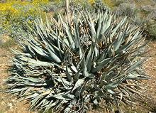

SAFARI
Users
Agave - Genus Agave
There are quite a few species of Agave. The ones listed here are those most used for food and beverages. Only varieties that are known edible should be consumed, and preparation should match traditional usage. Some Agaves contain large amounts of bitter saponins. One, the Octopus Agave, is so heavy in saponins it is used to make fiber brushes that have plenty of soap built right in.
Raw Agave sap is acrid and can cause serious dermatitis in sensitive people. You should also be careful not to be stabbed by the spikes at the end of the leaves, which can cause an effect similar to a serious bruise.
Agave Americana[Maguey, Century Plant; Agave americana] This agave was originally native to Mexico, Arizona and Texas, but has been widely planted as a decorative and has become naturalized in many countries around the world. Typically, the leaves are blue-green with toothed edges and a strong, very sharp, sometimes toxic, spike at the tip, but some decorative varieties have striped leaves and no teeth. The plant can grow to 10 feet wide and send up a flower stalk up to 30 feet tall. It will gather strength for 10 to 30 years, depending on conditions, before sending up a flower stalk, after which it is exhausted and dies. It will be succeeded by a few suckers at its base which will grow into mature plants. In pre-Columbian times, the flower stalk was often cut off before flowering. The plant would continue pumping sweet liquid which would gather at the leaf bases. This would be sucked out and lightly fermented as the drink pulque. The roots were cooked and eaten. Each flower stem produces several pounds of flowers which can be eaten similarly to Yucca flowers. Seeds can be ground into flour used for thickening soups or mixed with other flours for bread. Young flower stalks can also be roasted and eaten. In producing regions of Mexico, the plants are called Mezcales and
the distilled alcoholic drink Mezcal is made from them. For this purpose
the hearts, which may weigh up to 200 pounds, are baked in an oven to
extract the sweet juice.
Photo by Hugo.arg distributed under license Creative Commons
Attribution-ShareAlike v4.0 International.
Blue Agave[Tequila Agave; Agave azul (Spanish); Agave tequilana] This agave is native to Jalisco state in Mexico, favoring altitudes of over 5000 feet. The blue-green leaves, which can be up to 7 feet long, have many teeth along the edges and a strong sharp spike at the tip. At about 5 years they send up a flower stalk about 23 feet high, after which they are exhausted and die, succeeded by small suckers around the base, which eventually grow into full size plants. In commercial production, the flower stalks are cut off at about 1
year so the plant will live longer and produce a heavier heart. These
hearts are harvested at about 12 years old, when they weigh between 80
and 200 pounds. They are baked in an oven to extract the sweet juice,
which is then fermented and distilled into Tequila.
Photo by Stan Shebs distributed under license Creative
Commons
Attribution-ShareAlike v3.0 Unported, attribution required.
Hohokam Agave[Murphy Agave, Murphey's century plant; Agave murpheyi] This agave is native to southern Arizona and northern Sonora in Mexico. The blue-green leaves, which can be up to 32 inches long and 8 inches wide, have toothy edges and a strong sharp spike at the tip. At about 10 years they send up a flower stalk up to 18 feet high, but the flowers rarely produce fruit and seeds. These plants are propagated by suckers around the base after the main plant flowers and dies. This species was probably developed over hundreds of years specifically for human consumption. It matures in the late winter when other crops are scarce, and the leaves contain much less acid and are less acrid than those of other agaves. They can be gathered in late winter and early spring and cooked for food. The Hohokam Indians of Arizona cultivated this agave for food and
fiber, and on a large scale. Agave fields totaling around 20,000 acres
have been found between Tucson and Phoenix, and there were probably a
lot more. Cultivation began around 600 CE and extended to about 1450 CE.
The hearts were harvested just before they sent up a flower stalk and
weighed about 9 pounds. They were baked for two to three days in large
pit ovens. The baked hearts tasted much like sweet potato, but contained
a lot of indigestible fiber. Today this agave is not in cultivation and
is NatureServe rated G2 (globally imperiled).
Photo by Digigalos distributed under license Creative
Commons
Attribution-ShareAlike v3.0 Unported.
Desert Agave [Mescal, Maguey, Century Plant; Agave deserti] This agave is native to Southern California, including Baja, and Arizona. It comes in two varieties: var deserti, native only to Southern California and consisting of numerous rosettes, and var simplex consisting of a single or just a few rosettes, and native to both Southern California and Arizona. The blue-green leaves, which can be up 28 inches long and 4 inches wide, have many teeth along the edges and a strong sharp spike at the tip. At between 20 and 40 years it sends up a flower stalk up to 20 feet high, after which that rosette is exhausted and dies, succeeded by the smaller rosettes. Southern California Indians roasted young flower stalks and flower
buds, and also the "head", including the leaves.
Photo by Stan Shebs distributed under license Creative
Commons
Attribution-ShareAlike v3.0 Unported, attribution required.
Agave Nectar[Agave Syrup] This is a food industry deception skillfully marketed to the Yuppie class, as a "natural" and "healthy" alternative to High Fructose Corn Syrup (HFCS). The Agave Nectar of commerce is made not from agave sap but from agave starch. The conversion process is pretty much the same as for manufacturing HFCS, but the fructose content is much higher than with HFCS. Agave starch consists mainly of inulin (fructosan), a complex form of
fructose which ends up as 58% to 92% fructose in the final product, with
most of the rest being glucose. Vegans often use Agave Nectar in place
of honey, because honey exploits animals (bees). Apparently the poor
agave worms crushed to death in the process of making agave syrup are
not being "exploited". Vitamin B12 content will depend on the number
and quality of the worms crushed.
|
Sotol - Genus Dasylirion
Common Sotol[Desert Spoon, Spoon Flower; Dasylirion wheeleri] This plant is native to arid regions in Sonora and Chihuahua, Mexico and the states of Arizona, New Mexico and Texas in the United States. It has a short thick trunk, up to 5 feet long, which may lie horizontally on the ground, topped with a spherical display of long narrow leaves. The leaves are up to 39 inches long and have small, sharp teeth along the edges. These plants send up a flower stalk up to 16 feet tall. Unlike the agave, they do not die after flowering but send up a stalk every few years. This plant was a significant food source for the native Indians of the region. The stem bases, once cooked, can be eaten similarly to artichoke leaves, scraping the flesh off with the teeth and discarding the fibrous core, called "quid". This core is so stiff it can be, and has been, used as a spoon, thus the name "Desert Spoon". Sap of this plant has been used to make fermented beverages for at
least 800 years, and possibly as long as 9000 years. Today it is
harvested and prepared similarly to how Agave is prepared for making
Mezcal, to make the beverage Sotol. One plant can produce one bottle
of Sotol. This beverage has few commercial examples, and is just starting
to gain an international reputation. It is made in grades: Plata (unaged),
Reposado (aged several months to a year) and Añejo (aged at least
one year).
Photo by Stan Shebs under license Creative
Commons
Attribution-ShareAlike v3.0 Unported, attribution required.
Texas Sotol[Dasylirion texanum] This plant, native to arid regions of Chihuahua, Mexico and the state of Texas in the United States, is much smaller than most Dasylirions, with a trunk no more than 1-1/2 feet long and grass-like fronds up to 3 feet long and 1/2 inch wide, with sharply toothed edges. These plants send up a flower stalk up to 16 feet tall. Unlike the agave, they do not die after flowering but send up a stalk every few years. This plant was a significant food source for the native Indians of
the region. The hearts were pit baked and dried, then pounded into
flour for making bread.
Photo by Stan Shebs under license Creative
Commons
Attribution-ShareAlike v3.0 Unported, attribution required.
|